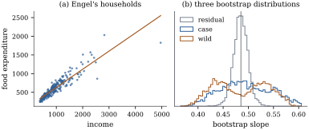

23.1 Resampling cases versus resampling residuals
Let
The bootstrap (Efron 1979) replaces
23.1.1. Two ways to estimate the data-generating mechanism
In the fixed-design model the rows
Let
(a) The residual bootstrap draws
(b) The case bootstrap (or pairs bootstrap) draws
Variants of (a) resample the
leverage-adjusted residuals
With an intercept the residuals already sum to zero (Proposition 6.4.3(b)). Without one, centring prevents a bias in the bootstrap world (Exercise (A1)).
23.1.2. The moments of the residual bootstrap
In the residual bootstrap, put
(a)
(b) if
(c) if the data follow the linear model with
Proof.
- (a) Given the data,
By (b) the plain residual bootstrap shrinks the usual
variance by the factor
23.1.3. Consistency for a linear contrast
Consider designs
The Cauchy–Schwarz bound
Remark (Pólya’s theorem). If
distribution functions
A bootstrap distribution is a conditional distribution that changes with the data, so we need a conditional form of the Lindeberg–Feller theorem.
For each
Proof. Random variables converge to
zero in probability if and only if every subsequence has
a further subsequence along which they converge almost
surely. Given a subsequence, a diagonal argument gives a
further subsequence along which
In the setting above,
Proof. Write
First claim:
Second claim: for
In the fixed-design setting above, assume Eq. 23.1.1.
Let
(a)
(b)
(c)
Proof. Put
(a)
(b) Similarly
(c) follows from (a) and (b) by the triangle inequality.
The theorem holds for the rescaled residuals too,
since they differ by the factor
Warning. The residual bootstrap
treats the residuals as exchangeable. It gives
23.1.4. The case bootstrap
The case bootstrap assumes only that the cases are
independent draws from a population. By Proposition 6.11.3,
least squares then estimates the population projection
coefficient whether or not the regression function is
linear, and the case bootstrap estimates the variability
of
Let
The matrix
Let
Proof. For multinomial counts with
To first order, then, the case bootstrap estimates
the variance of
Return to Engel’s data on the income and food
expenditure of
The classical standard error of the slope is

import numpy as np
import statsmodels.api as sm
data = sm.datasets.engel.load_pandas().data
y = data["foodexp"].to_numpy()
x = data["income"].to_numpy()
X = np.column_stack([np.ones(len(y)), x])
n, p = X.shape
XtX_inv = np.linalg.inv(X.T @ X)
beta_hat = XtX_inv @ X.T @ y
e_hat = y - X @ beta_hat
h = np.sum((X @ XtX_inv) * X, axis=1) # leverages
s2 = e_hat @ e_hat / (n - p)
se_classical = np.sqrt(s2 * XtX_inv[1, 1])
print(f"slope {beta_hat[1]:.4f}, classical se {se_classical:.5f}, max leverage {h.max():.3f}")
rng = np.random.default_rng(2301)
B = 4000
A = XtX_inv @ X.T # beta_hat = A y
fit = X @ beta_hat
e_c = e_hat - e_hat.mean() # centred residuals
r = e_hat / np.sqrt(1 - h) # leverage-adjusted residuals
r_c = r - r.mean()
def residual_bootstrap(resid, B):
"""Slopes from y* = X beta_hat + e*, with e* drawn with replacement from resid."""
idx = rng.integers(0, n, size=(B, n))
y_star = fit + resid[idx]
return (y_star @ A.T)[:, 1]
slopes_res = residual_bootstrap(e_c, B)
slopes_mod = residual_bootstrap(r_c, B)
print(f"residual bootstrap se: raw {slopes_res.std():.5f}, leverage-adjusted {slopes_mod.std():.5f}")
def pairs_bootstrap(B):
"""Slopes refitted to n cases drawn with replacement from the (x_i, y_i)."""
idx = rng.integers(0, n, size=(B, n))
xs, ys = x[idx], y[idx]
xc = xs - xs.mean(axis=1, keepdims=True)
return np.sum(xc * ys, axis=1) / np.sum(xc ** 2, axis=1)
slopes_pairs = pairs_bootstrap(B)
print(f"case bootstrap se {slopes_pairs.std():.5f}")The choice between the two is a choice of model. The
residual bootstrap suits a linear mean with exchangeable
errors, even for sampled cases: when the error law does
not depend on
23.1.5. Exercises
A. Check your understanding
In a regression through the origin,
Solution. Here
A case-bootstrap resample of size
B. Practice
Suppose the errors are independent with variances
Solution. By Proposition 23.1.1
the bootstrap variance is
In a one-way layout with
C. Going deeper
Exercise (B2)
shows that a case-bootstrap resample can be one that no
least squares fit exists for, when
(a) Show that a resample gives a design of rank
(b) Deduce that
(c) Show that a resample which uses exactly two of the cases,
(d) What does (c) say about the tails of the case-bootstrap distribution of the slope, and which feature of the design controls them? Suggest two repairs.
Solution.
(a) The resampled design has rank
(b) On that event
(c) If the resample contains only cases
(d) Nearly one resample in ten, for
Heteroscedasticity is not the only way the residual
bootstrap can aim at the wrong variance; a curved mean
does it too, with homoscedastic errors. Let
(a) Show that the population projection is
(b) Show that
(c) Using Theorem 19.5.2 and Proposition 23.1.1(a), identify which of the two numbers the residual bootstrap estimates and which the case bootstrap estimates, and give the ratio of the two standard errors when
(d) Here the residual bootstrap is too wide, the opposite of
- Explain why, from where the misfit sits in the design.
Solution. Throughout,
(a)
(b)
(c) By Theorem 19.5.2(a) the true limit of
(d) The residual bootstrap spreads the observed misfit evenly over the design, because it treats the residuals as exchangeable. Here the misfit is not even: the approximation error